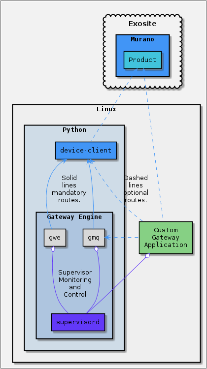

ExositeReady™ Gateway Engine - Docs
ExositeReady™ Gateway Engine (GWE) is designed to be a custom application hosting framework.

Key Features
As discussed in the README below, there are a number of key features that make GWE a valuable proposition for any IoT solution.
Application Hosting
GWE uses the open source [supervisord] project to provide the following features to the application hosting environment on a gateway:
- Application logging management
- Application start/restart/crash rules and monitoring
- Language neutral (C,Python,Node,Go,etc.)
In addition to what Supervisor provides, GWE provides the following features to a hosted Custom Gateway Application:
- Over-the-Air Updating
- Hosted Application Version Tracking
- OS/Filesystem Metadata Collection
- Bandwidth Telemetrics (Beta)
OTA Application Management
GWE was designed to install and update applications over the air. For more information on building Custom Gateway Application tarballs see the GWE README page on Hosted Applications.
OS/Filesystem Metadata Collection
GWE reports several datapoints every time its update interval lapses. Some of the data in these reports include:
- Disk usage on available mount points
- Memory consumed by hosted applications
- Network interface IP addresses
Exosite Device API Client
GWE is always built and installed with the device-client library.
Bandwidth Telemetrics (Beta)
The log of all requests made with the device-client library is queried and statistics are reported to the usage_report dataport.
Resources
For detailed information on how to build or install gateway-engine:
For documentation on the gateway-engine python package: